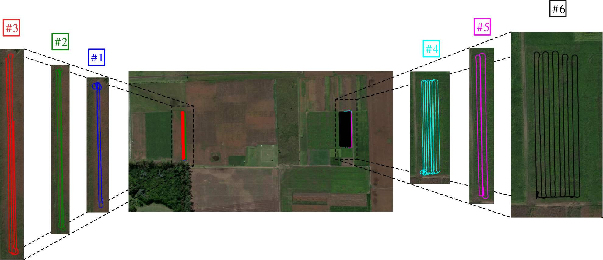
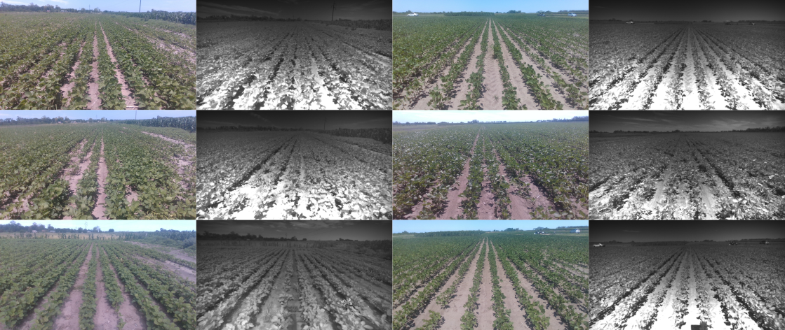

We present a multi-modal dataset collected in a soybean crop field, comprising over two hours of recorded data from sensors such as stereo infrared camera, color camera, accelerometer, gyroscope, magnetometer, GNSS (Single Point Positioning, Real-Time Kinematic and Post-Processed Kinematic), and wheel odometry. This dataset captures key challenges inherent to robotics in agricultural environments, including variations in natural lighting, motion blur, rough terrain, and long, perceptually aliased sequences. By addressing these complexities, the dataset aims to support the development and benchmarking of advanced algorithms for localization, mapping, perception, and navigation in agricultural robotics. The platform and data collection system is designed to meet the key requirements for evaluating multi-modal SLAM systems, including hardware synchronization of sensors, 6-DOF ground truth and loops on long trajectories. We run multimodal state-of-the art SLAM methods on the dataset, showcasing the existing limitations in their application on agricultural settings. The dataset is publicly available on http://fs01.cifasis-conicet.gov.ar:90/~robot_desmalezador/rosariov2/, and utilities to work with it are released on https://github.com/CIFASIS/rosariov2.
The robot consists of a mobile platform with four independently driven wheels. It has been designed with autonomy in agricultural settings in mind. The distance and height of the wheels is consistent with the row distance and height of certain crops such as soybean.
The robot was mounted with the following sensors, whose data is available in the dataset:
| Name |
Sensor | Resolution / Range |
Acquisition Rate |
|---|---|---|---|
| Intel Realsense D435i | Stereo IR Camera | 1280px × 720px 87° × 58° |
15Hz |
| Color Camera | 1280px x 720px 69° × 42° |
15Hz | |
| IMU |
± 4g ± 1000deg/s |
200Hz | |
| Emlid Reach M1 | GNSS | ± 2.5m | 5Hz |
| RTK-GNSS | ±0.04m | 5Hz | |
| 9-DoF IMU | ± 8g ± 1000deg/s |
200Hz | |
| Emlid Reach M2 (1) | GNSS | ± 2.5m | 5Hz |
| RTK-GNSS | ±0.04m | 5Hz | |
| 9-DoF IMU | ± 8g ± 1000deg/s |
200Hz | |
| Emlid Reach M2 (2) | GNSS | ± 2.5m | 5Hz |
| RTK-GNSS | ±0.04m | 5Hz | |
| IMU | ± 8g ± 1000deg/s |
200Hz | |
| E-Bike Wheel Odometer |
Hall-Effect Odometry | ± 7.5° |
10Hz |
| OMRON E6CP-A |
8-bit Absolute Encoder | ± 1.4° 92° |
10Hz |
The dataset consists of six separately recorded sequences of the robot traversing a soybean plantation. The first three sequences (sequences from the first day) took place on December 22nd of 2023, in a given field, and the remaining three sequences (sequences from the second day) took place on December 26th of 2023, in a different field from the first.
The following image shows the trajectories recorded from the six sequences:

Some sample images taken from the RealSense D435i color camera and stereo infrared camera (left camera shown here) are shown in the following image, one pair for each trajectory:

This work was partially supported by Consejo Nacional de Investigaciones Cientı́ficas y Técnicas (Argentina) under
grants PIBAA No.0042, AGENCIA I+D+i (PICT 2021-570), and by Universidad Nacional de Rosario
(PCCT-UNR 80020220600072UR).
We specially thank Engr. Néstor Di Leo from the Land Management Chair of the Faculty of Agricultural Sciences of the
National University of Rosario for giving us access to the agricultural field.
@unpublished{soncini2024rosariov2,
title={{The Rosario Dataset v2: Multimodal Dataset for Agricultural Robotics}},
author={Soncini, Nicolas and Cremona, Javier and Vidal, Erica and García, Maximiliano and Castro, Gastón and Pire, Taihú},
year={2024}
}
© This webpage was in part inspired from this template.